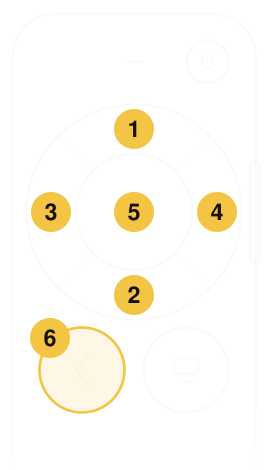
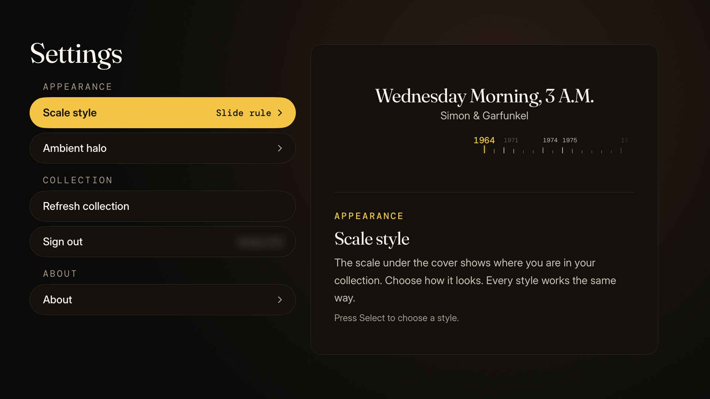

How to use
A tour of every screen, and what your remote does on each one.
Vinyl for Apple TV puts your records, the albums in your Discogs collection, on your TV. Discogs is the online service where that collection lives.
This guide takes you through the app one screen at a time. For each screen you get a picture, a short explanation and a list of what the remote does there. Like a record, the guide has sides, one for each part of the app. It starts with Side A, the gallery, where your covers are on show.
Not signed in yet? Get started takes you through signing in step by step. Come back here when your records are on screen.


Meet the remote
You only need two parts of the remote for this app: the clickpad, which is the round pad at the top, and the button just below it.
- 1Swipe up. Slide your thumb up across the clickpad.
- 2Swipe down. Slide your thumb down.
- 3Swipe left. Slide your thumb to the left.
- 4Swipe right. Slide your thumb to the right.
- 5Press the clickpad. Push the pad down until it clicks.
- 6 The Back button. It returns to the previous screen. The Apple TV looks after this button itself, so the app cannot change what it does.
Swiping moves the highlight: the cover or button that stands out on the screen. Pressing the clickpad opens or chooses whatever is highlighted.
Every drawing in this guide uses these same numbers, and shows only the ones that do something on that screen.
The Gallery

The app opens in the view you used last. To begin with, that is the Gallery: your records as a row of covers. The other view, the Grid, shows them as a wall, seven across.
The large cover is the highlighted record. Its title and artist sit underneath, and the background takes on the cover’s colour.
Swipe left or right to move through your collection, one record at a time. Press the clickpad to open the record in the middle.
The scale
Under the title is a scale, like the dial of an old radio. Each tick is one record, and the yellow needle marks where you are. The labels follow the order you chose: years, letters or genres. On the right is your place in the collection, for example 20 / 30. You can choose how the scale looks in Settings.
The halo
Stop swiping for 30 seconds and the cover’s colour swells slowly behind it and draws back, like a tide. We call this light the halo. While it moves, the toolbar fades away, the scale dims and its needle glows. Any swipe brings everything back. To switch it off, open Settings and choose Ambient halo.
The Grid

Would you like to see more records at once? The Grid fills the screen with your covers, seven across and four rows at a time.
The highlighted record sits on a yellow card with its title and artist. While you move, the scale appears at the foot of the screen. It leaves three seconds after your last swipe.
The toolbar stays out of the way here. Swipe up from the top row to bring it in, and swipe down to send it away. Pressing on the wall brings it in as well. If you have chosen a genre, its name stays in the top right corner.
After 30 seconds without a swipe, the wall dims, the card turns dark and the halo rises behind it. Any swipe brings the wall back.
To switch between the Gallery and the Grid, use the two view buttons on the toolbar.
The toolbar

The toolbar is the row of buttons at the top of your collection. To reach it, swipe up from the covers. In the Grid it appears only when you call it: swipe up from the top row.
Here is what each button does, from left to right.
- SortChanges the order of your records: by Recently added, Artist, Album, Year or Genre. The app uses Recently added until you choose another. The button shows the current order.
- GenreShows only the records in one genre or style. Choose All genres to see everything again. The button reads
All genresor the genre you chose, and it appears only if Discogs lists a genre or style for your records. - SuggestCan’t decide? This opens a record picked at random. If you have chosen a genre, it picks from that genre only. A suggested record carries a yellow sticker, Another suggestion. Select it for a different pick.
- The viewsTwo buttons with icons: the Gallery, your covers in a row, and the Grid, your covers as a wall. The one in use is underlined.
- The gearOpens Settings. It is the last button on the right.
Suggest, Sort and the view buttons appear once your library has records in it.
The app remembers your sort order and view for next time. It does not remember the genre, so you see all genres again when you reopen the app.
The record screen

Press the clickpad on any record to open it. On the left you see its cover, title and artist, and its details: when and where it was published, its genre, style, label and length. Its track list, the list of songs, is on the right.
When Discogs has no year for your pressing, the app looks for the album’s year elsewhere and shows it as Album from 1959.
Sides
A vinyl record has songs on both of its faces, and each face is called a side. The side dial above the list shows a letter for every side: A, B and so on. The side you are looking at stands out in a pill that reads Side A, Side B and so on. Swipe left or right to change side.
A side that is longer than the screen scrolls: swipe down to read on, and up to go back.
Some releases have no side letters. They have a single side, shown as Track list.
The cover on its own
Swipe up to see the cover by itself, large, on a black background. This is the cover view. Swipe down to return to the track list. The cover breathes and drifts very slowly, so the picture is never quite still.

The halo
In the cover view, the halo is a slow light in the cover’s colours behind the sleeve. To begin with, you switch it yourself: swipe right to turn it on and left to turn it off. A short line at the foot of the screen confirms it, HALO ON or HALO OFF.
The track list can have a light of its own: a tide of the cover’s colour from the top left corner, after 15 seconds without a swipe. It is off to begin with.
To choose where the halo appears
- 1.Press to return to your collection.
- 2.Swipe up to the toolbar, swipe right until the gear is highlighted, then press the clickpad. Settings opens.
- 3.Choose Ambient halo.
- 4.Highlight Gallery, Track list or Cover view and press the clickpad to change it. The card on the right explains each choice.
- 5.Press until you are back in your collection.
Gallery and Track list can be On or Off. Cover view has three choices: On, where the light is always there; Off; and Manual, where you switch it with swipes left and right. The app remembers your choices.
Covers that improve
The app first shows the cover image from Discogs. When it finds a better one, it swaps it in, so a cover can change while you watch. It looks for better covers at MusicBrainz, an open music database, and the Cover Art Archive.
Settings

Settings is behind the gear, the last button on the toolbar. Swipe up to the toolbar, swipe right until the gear is highlighted, then press the clickpad. Settings fills the screen: the rows are on the left, and a card on the right explains the highlighted row.
Here is what each row does, from top to bottom.
- Scale styleChooses how the scale under the cover looks: Slide rule, a classic straight radio scale, or Glass lens, where a glass lens rides over the needle. The card shows a live preview of each. Both work the same way.
- Ambient haloChooses where the halo appears: in the Gallery, on the track list and in the cover view. See To choose where the halo appears.
- Refresh collectionUse this after you add or remove records on Discogs. The app reads your whole collection again. It adds new records, removes the ones you have taken off Discogs and updates the rest. The card shows the progress, for example
120 / 800. You can leave Settings and keep browsing while it runs. A refresh cannot be stopped. - Sign outShows the Discogs username you are signed in with. Selecting it asks what should happen to your library. Cancel is highlighted when the question opens, so a stray press does nothing.
- Sign out and keep librarySigns you out of Discogs on this Apple TV and keeps your library here. When you sign in again with the same account, your library is there at once.
- Sign out and erase libraryCarefulSigns you out and deletes your library from this Apple TV. It cannot be undone. Your collection on Discogs is not changed, so signing in again loads the library from there once more. Your view, sort order and halo choices are kept.
- AboutOpens the About screen, with the app’s version number.
Open a record on Discogs
Every record has its own page on discogs.com. The Apple TV has no web browser, so the app helps you open that page on your phone instead.
- 1.On the record screen, swipe down until you reach the line Data provided by Discogs under the cover details, then press the clickpad.
- 2.A panel opens with a QR code and the words
Scan with your phone. A QR code is a square pattern that a phone camera can read. - 3.Point your phone’s camera at the code and open the link it offers.
- 4.Press on the remote when you are done.

Controls
- 6 Returns to the previous screen.

The About screen
About is the last row in Settings. It shows the app’s name and version, the Discogs notice, and three QR codes: the privacy policy, the support page and an email to support.
There is nothing to press on this screen. Scan a code with your phone, or type the website or the email address shown under the codes.
Controls
- 6 Returns to the previous screen.